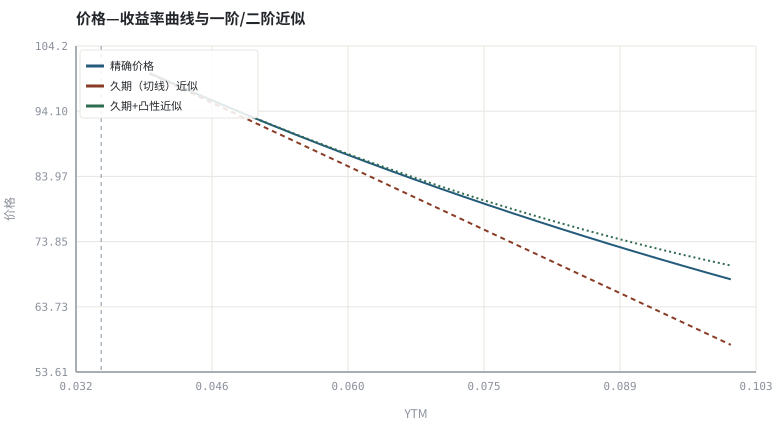
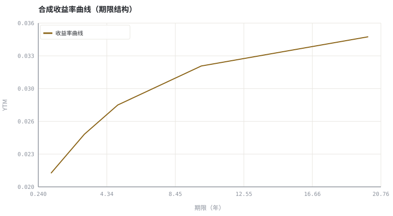

第 09 章债券定价、久期与期限结构
把价格对利率的敏感度写成一阶导与二阶导，是全书最干净的一次「导数即风险」。
本章位置：第 08 章给出价格—利率的定性关系，本章把它量化；第 10 章 · 股票估值：从 DCF 到相对倍数 换成股票现金流，第 12 章 · 期权 payoff、平价关系与希腊字母 换成或有现金流，三者共用同一套折现思想。
久期是 dP/dy，凸性是 d²P/dy²。把债券当成一个黑箱函数，用中心差分求敏感度，比记闭式解更容易推广到含权与结构化产品。
- 能计算麦考利久期、修正久期与凸性。
- 能用一阶、二阶近似估计利率变动后的价格，并量化近似误差。
- 能读收益率曲线并解释期限利差与倒挂。
- 能说明久期匹配为什么不能完全免疫利率风险。
§知识点地图
每个知识点都配了 1～2 个扩展学习链接；本章完整资源清单见 扩展学习。
| # | 知识点 | 扩展学习 | 状态 |
|---|---|---|---|
| 1 | 现金流折现 | Bond duration · Bond convexity | 正文已覆盖 |
| 2 | 麦考利久期 | Bond duration · Bond convexity | 正文已覆盖 |
| 3 | 修正久期 | Bond duration · Bond convexity | 正文已覆盖 |
| 4 | 凸性 | Bond convexity · Bond duration | 正文已覆盖 |
| 5 | 一阶与二阶近似 | Bond duration · Bond convexity | 正文已覆盖 |
| 6 | 收益率曲线 | Rate of return · Logarithmic return | 正文已覆盖 |
| 7 | 期限利差与倒挂 | Bond duration · Bond convexity | 正文已覆盖 |
| 8 | 久期匹配与免疫 | Bond duration · Bond convexity | 正文已覆盖 |
§9.1一阶：修正久期
D_mod = − (1/P) · dP/dy | ΔP/P ≈ − D_mod · Δy
久期的量纲是年，直观含义是「收回全部现金流现值的加权平均时间」。零息债的麦考利久期等于到期期限；票息越高、到期越短，久期越短。组合层面久期可按市值加权，因此它是可加的风险预算单位——这一点会在第 30 章复用。
§9.2二阶：凸性修正近似误差
ΔP/P ≈ − D_mod · Δy + (1/2) · C · (Δy)^2 ，C = (1/P) · d²P/dy²
价格—收益率曲线是凸的，切线（久期）在利率大幅变动时会低估涨幅、高估跌幅。凸性项修正这个偏差。用数值微分可以直接算出 dP/dy 与 d²P/dy²，不必背闭式公式——这也是程序员最舒服的推导方式。
§9.3期限结构：一条曲线里的宏观信息
| 曲线形态 | 典型含义 | 对持仓的影响 |
|---|---|---|
| 向上倾斜 | 长期要求期限溢价 | 拉长久期可得额外票息，但承担更大价格敏感 |
| 平坦 | 长短端预期接近 | 久期性价比下降 |
| 倒挂 | 短端高于长端 | 常被视为衰退预期信号，但不可单独作为择时依据 |
| 陡峭化 / 平坦化 | 长短期利差变化 | 曲线策略赚的是斜率变化，不是方向 |
久期免疫只在一阶、平行移动、且现金流确定的条件下成立。真实曲线会扭转，含权债券（可转债、可赎回债）的现金流本身随利率变化，此时需要有效久期与情景分析。
§Python 分析实例
实验 9-1 · 久期、凸性与近似误差的数值验证
#!/usr/bin/env python3
# -*- coding: utf-8 -*-
"""用中心差分求一阶/二阶导数，比较三种价格估计，并画收益率曲线。
数据为合成数据或模型示意，仅用于教学，不构成投资建议。
"""
from __future__ import annotations
import math
import pathlib
import random
import statistics
import sys
sys.path.insert(0, str(pathlib.Path(__file__).resolve().parents[3] / "tools"))
from chart import Chart, candlestick, heatmap, BLUE, RED, GREEN, AMBER
FIG = pathlib.Path(__file__).resolve().parents[1] / "fig"
FIG.mkdir(exist_ok=True)
random.seed(7)
# ---- 参数区 ----
FACE = 100.0
COUPON = 0.04 # 年票息率
MATURITY = 8 # 年
Y0 = 0.035 # 当前 YTM
H = 0.0001 # 数值微分步长
SHOCKS = (-0.020, -0.010, 0.0, 0.010, 0.020)
CURVE = [(1, 0.021), (2, 0.023), (3, 0.025), (5, 0.028),
(10, 0.032), (20, 0.035)]
# ---- 计算与作图 ----
def bond_price(y):
cf = [COUPON * FACE] * MATURITY
cf[-1] += FACE
return sum(c / (1 + y) ** t for t, c in enumerate(cf, 1))
p0 = bond_price(Y0)
d1 = (bond_price(Y0 + H) - bond_price(Y0 - H)) / (2 * H)
d2 = (bond_price(Y0 + H) - 2 * p0 + bond_price(Y0 - H)) / (H * H)
mod_dur, convexity = -d1 / p0, d2 / p0
macaulay = mod_dur * (1 + Y0)
ys = [0.005 + i * 0.0025 for i in range(25)]
actual = [bond_price(Y0 + dy) for dy in ys]
linear = [p0 + d1 * dy for dy in ys]
quad = [p0 + d1 * dy + 0.5 * d2 * dy * dy for dy in ys]
dys = [Y0 + dy for dy in ys]
c = Chart(FIG / "09-convexity.svg", "价格—收益率曲线与一阶/二阶近似", xlabel="YTM", ylabel="价格")
c.line(dys, actual, BLUE, label="精确价格")
c.line(dys, linear, RED, label="久期（切线）近似", dash="5 4")
c.line(dys, quad, GREEN, label="久期+凸性近似", dash="2 3")
c.vline(Y0, "#9aa6b2", label="当前 YTM")
print("近似图:", c.save())
cu = Chart(FIG / "09-curve.svg", "合成收益率曲线（期限结构）", xlabel="期限（年）", ylabel="YTM")
cu.line([t for t, _y in CURVE], [y for _t, y in CURVE], AMBER, label="收益率曲线")
print("曲线图:", cu.save())
rows = []
for dy in SHOCKS:
px = bond_price(Y0 + dy) - p0
e1 = d1 * dy - px
e2 = d1 * dy + 0.5 * d2 * dy * dy - px
rows.append((dy, px, e1, e2))
print("麦考利久期=%.3f 年 修正久期=%.3f 凸性=%.2f | 当前价格=%.3f" %
(macaulay, mod_dur, convexity, p0))
print("期限利差 10Y-1Y=%.2f%% | Δy=+2%% 时 实际=%.3f 一阶误差=%.3f 二阶误差=%.3f" %
(100 * (CURVE[4][1] - CURVE[0][1]), rows[-1][1], rows[-1][2], rows[-1][3]))操作：对照 Δy=+2% 与 Δy=−2% 的一阶误差符号，理解「凸性总是帮忙」。 预期与判读：二阶近似的误差比切线近似小一到两个数量级，且利率变动越大差距越明显。久期与凸性都是用数值微分算出来的，不需要背公式。
改参数看趋势：把 MATURITY 改成 20，久期与凸性同时增大，观察近似误差与价格敏感度如何变化。 文件位置：part2/09-bond-pricing/code/09-duration.py


代码块右上角可一键复制；仓库里的 code/*.py 由 tools/extract_code.py 从这些代码块自动抽取。脚本只用标准库、固定 random.seed(7)，运行后写出 fig/*.svg；批量运行用 ./tools/run_python.sh。
§本章参考资料
按本章知识点挑选的精读资料；更多检索入口见 扩展学习。
§常见误区
- 把麦考利久期与修正久期混用（相差一个 1+y 因子）。
- 假设收益率曲线总是平行移动。
- 对含权债券直接套用普通久期。
- 把倒挂曲线当成可靠的择时信号，忽略期限溢价与政策因素。
§习题与思考
- 推导零息债的麦考利久期等于期限。
- 在示例里比较
Δy=−2%与+2%的一阶误差，解释符号。 - 用两种期限债券构造久期匹配的组合，说明为什么曲线扭转时仍会亏。
§扩展学习
以下资料按本章知识点挑选，可直接精读或对照真实数据；知识点地图里每一条也挂了 1～2 个直达链接。
- Bond duration（百科）：价格对利率的一阶敏感度
Bond duration - Bond convexity（百科）：久期之外的二阶价格修正
Bond convexity - Yield curve（百科）：期限结构、倒挂与远期利率
Yield curve - Credit spread (bond)（百科）：信用风险的额外补偿
Credit spread (bond) - Discounted cash flow（百科）：把未来现金流折成现值
Discounted cash flow
继续扩展：在 Google Scholar 检索本章相关论文 · 在 MIT OCW 检索配套课程 · 在 arXiv 检索预印本 · 全书参考资源总表 · 附录 A 速查与链接总表
§延伸阅读与内链
- 第 10 章 · 股票估值：从 DCF 到相对倍数 股权现金流折现；第 12 章 · 期权 payoff、平价关系与希腊字母 无套利定价；第 30 章 · 仓位、杠杆、VaR/CVaR 与凯利上界 用久期做风险预算。